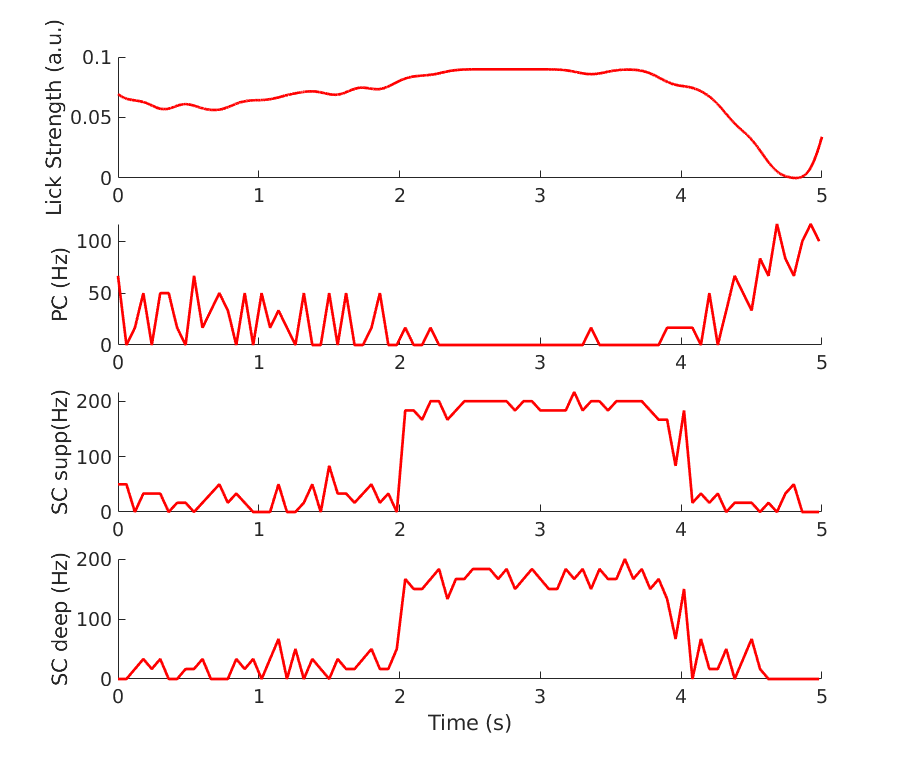

Developer Fabio Simoes de Souza, 2020
University of Colorado Anschutz Medical Campus
University Federal of ABC
Ma et al., 2020
Molecular layer interneurons in the cerebellum encode for valence in
associative learning
Nature Communications
biorXiv https://doi.org/10.1101/2019.12.14.876201
Region: Cerebellum
Cell Type: Purkinje cell (PC) and Stellate cell (SC)
Simulator: NEURON
Model Input: PF background input from 0 to 2000ms and from 4000ms to 5000ms.
Odorant-driven PF input from 2000ms to 4000ms.
CF input at 4000ms for S+ conditions.
Model Output: PC and SC firing in response to PF and CF inputs
S+ and Saline:
//load_file("mosinit_PC_SC_SplusSaline.hoc")
S- and Saline:
//load_file("mosinit_PC_SC_SminusSaline.hoc")
S+ and CNO:
//load_file("mosinit_PC_SC_SplusCNO.hoc")
S- and CNO:
//load_file("mosinit_PC_SC_SminusCNO.hoc")
5) Run the file mosinit.hoc (with nrngui). If you need more help
running the model please consult:
https://senselab.med.yale.edu/ModelDB/NEURON_DwnldGuide
6) 20200715: an update from Fabio Simoes de Souza to include spike time saving in hoc files and Plot_results.m matlab file to plot them similar to Suppl. Fig. 14:
